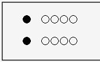
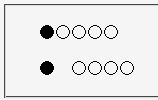

フロート化していない:first-letter擬似要素へ右マージンを設定しても無視される。
<style type="text/css">
p#f:first-letter {
margin: 0 1em;
}
span#fl {
margin: 0 1em;
}
</style>
<p id="f">●○○○○</p>
<p><span id="fl">●</span>○○○○</p>
●○○○○
●○○○○
上段は:first-letterを使用して左右に1文字分のマージンをおいた場合、下段はspan要素を用いて同様のスタイルを再現した場合です。
WinIE6.0での表示（標準モード）
Moz1.0.2での表示（標準モード）
同様の現象がBugzillaに登録されています。以下を参照してください。
Moz1.0.2/1.2.1では標準・互換の両モードで不具合の発生が確認されました。